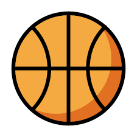

Canchas de básquetbol en Montevideo
- BARRIO: CIUDAD VIEJA
- Plaza número 1 (Lindolfo Cuestas y Cerrito)
- BARRIO: CORDÓN
- Plaza Líber Seregni (Victor Haedo y Joaquín Requena)
- BARRIO: PARQUE RODÓ
- Aro del Parque Rodó (al lado del Casino del Parque Rodó)
- Cancha del Centro de Estudiantes de Ingeniería (al lado de la Facultad de Ingeniería)
- BARRIO: BARRIO SUR
- Plaza Juan Ángel Silva (Minas y Cebollatí)
- Plaza frente al Disco cerca del Club Atenas (Cebollatí y Santiago de Chile)
- BARRIO: AGUADA
- Plaza Luisa Cuesta (Lima y Acuña de Figueroa)
- Plaza en la circunvalación del Palacio Legislativo
- BARRIO: BUCEO
- BARRIO: MALVÍN NUEVO
- Plaza de los Olímpicos (cerca del club Unión Atlética)